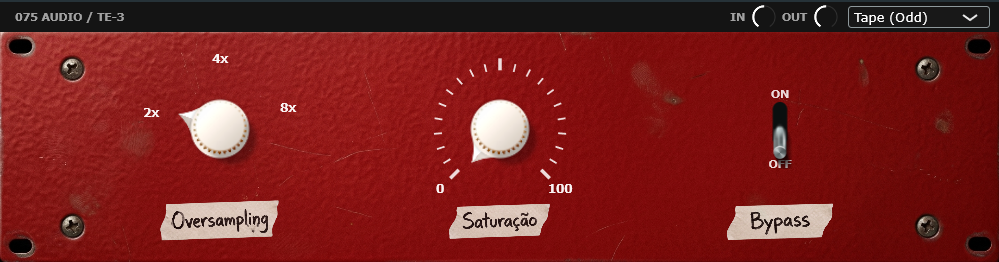

O toque analógico que faltava na sua mix.
Projetado para produtores exigentes. Processamento transparente, interface intuitiva e zero complicação.

Não acredite apenas em palavras. Veja a análise.
Latência Zero
Ideal para gravação ao vivo e monitoramento direto na DAW.
Baixo Uso de CPU
Abra dezenas de instâncias sem travar seu projeto.
Design Limpo
Interface focada no workflow, sem menus confusos.
Adicione o TE-3 à sua mixagem.
Versão oficial completa, 100% gratuita para Windows (VST3 64-bits).
Baixar AgoraInstalação: Basta copiar o arquivo .vst3 para a sua pasta C:\Program Files\Common Files\VST3